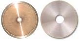

It usually consists of sawing, grinding, polishing, and staining the specimen until the plane of interest is ready for optical or electron microscopy. The conventional method of microsectioning requires the encapsulation of the specimen in plastic to give it stability, support, and protection. A relatively newer technology utilizes specific tools and procedures to allow non-encapsulated
microsectioning.
Conventional microsectioning
starts with
sample
preparation.
This consists of cleaning, mounting, and
encapsulation
of the sample in polyester or epoxy resin. Sometimes, a sample is sawed to
reduce its size prior to encapsulation. This is usually done to fit the
specimen perfectly into the
mold,
as well as to reduce the grinding needed during actual sectioning.
Fig.
1.
Examples of
Sample Mounting Presses from Buehler
The
positioning of the specimen in the mold during encapsulation is critical. It must be chosen well to minimize the sawing and grinding needed to expose the plane of interest. The resin is usually poured inside a
vacuum impregnator to minimize bubbles or air pockets, which affect the quality of the microsectioned sample. The sample is then allowed to
cure at ambient pressure. Quick-cure resins are not recommended for specimens suspected of delaminations
or microcracks, since the rapid curing of the resin can
heal
these defects.
Sample
preparation is then followed by
sawing
of the encapsulated specimen with the use of a
diamond wheel
cutter.
The sawing in this step is usually done along a plane parallel to the
plane of interest. Proper sawing
minimizes
the amount of grinding needed to expose the plane of interest in the
specimen.
|
|
 |
|
Fig.
2.
Examples of
Precision Saws from Buehler |
Fig.
3.
Examples of
Diamond Wheel Saw Blades |
Grinding
is done after the specimen has been cut to its optimum size. A typical
grinder/polisher has a
platen
(or a set of platens) over which the grinding material (SiC paper,
polishing cloth, diamond paste, etc.) is placed. Grinding is
often started using a 120 or 240 Grit SiC paper. The grinding process then
progresses through 320, 400, and 600 Grit SiC
paper. Each step should remove all the
scratches
from the
previous
step.
Rinse
the specimen between each step. A properly ground specimen will only have
one
surface plane.
Polishing
follows grinding. Polishing is very similar to grinding, except that a Texmet, nylon, or silk cloth with diamond or alumina paste or powder on the surface is used instead of SiC
paper.
Rough polishing
is usually done using 6- or 1-micron diamond particles.
Fine polishing
is
usually done using 1-micron, then 0.3-micron, then 0.05-micron alumina
particles. The total fine polish time should be short, i.e., less than 30
seconds. All scratches on the cross-section surface should already have
been removed after this step.
|
|
|
Fig.
4.
Examples of
Grinders/Polishers |
See Also:
Failure
Analysis; All
FA Techniques;
Optical
Inspection;
Xray
Radiography;
Decapsulation;
Focused
Ion Beam;
SEM/TEM;
Acoustic
Microscopy; FA Lab
Equipment; Basic FA
Flows;
Package Failures; Die
Failures
HOME